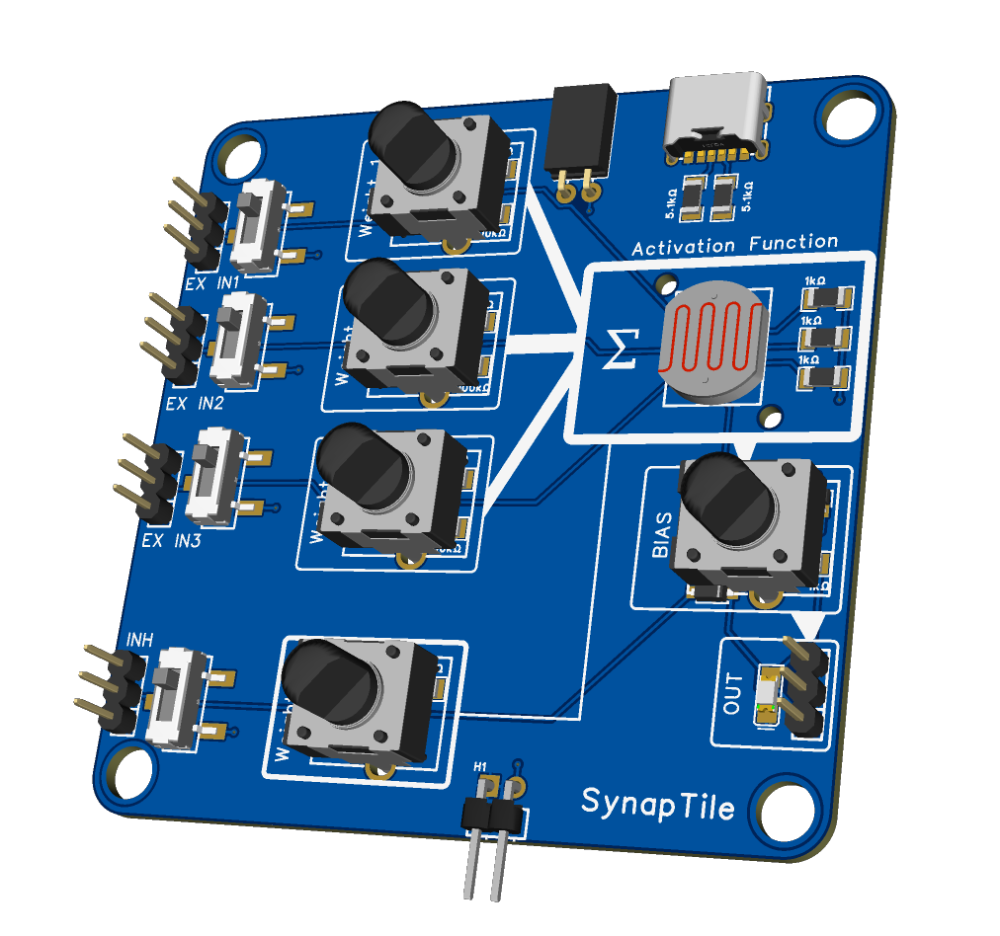

Demnächst verfügbar
Neuronale Netze von Hand bauen.
SynapTile™ ist ein modulares Hardware-Lernsystem aus Perzeptron-ähnlichen elektronischen Kacheln. Signale sehen, Entscheidungseinheiten verbinden, verstehen wie KI funktioniert.
Statt neuronale Netze nur durch Code, Diagramme oder abstrakte Mathematik zu lernen, macht SynapTile sie sichtbar, anfassbar und intuitiv.
Beim Start informiert werden
Das Konzept
Was ist SynapTile™?
SynapTile ist ein physisches Lernsystem, mit dem man einfache neuronale Netze aus modularen elektronischen Kacheln bauen und verstehen kann.
Im Kern verwandelt SynapTile die Idee eines Perzeptrons in ein physisches Objekt. Jede Kachel repräsentiert eine einfache Entscheidungseinheit: sie empfängt Eingangssignale, kombiniert sie, reagiert mit einem Schwellenwertverhalten und erzeugt einen Ausgang.
Wenn mehrere Kacheln verbunden werden, entsteht ein größeres Netzwerk, das sich wie ein echtes neuronales System verhält.
Sichtbar
Signale und Aktivierungen sehen, statt unsichtbare Berechnungen zu vermuten.
Anfassbar
Kacheln in die Hand nehmen, verbinden und Netzwerke physisch zusammenbauen.
Modular
Von einer einzelnen Kachel bis zu einem komplexen Netzwerk skalieren.
Intuitiv
Verstehen ohne Code, ohne Matrizenrechnung, ohne Softwareframeworks.
Wie eine Kachel funktioniert
Jede SynapTile-Kachel verhält sich wie ein vereinfachtes Neuron oder Perzeptron. Sie empfängt Signale, verarbeitet sie und entscheidet, ob sie aktiviert wird.
- 3 exzitatorische Eingänge — Signale, die zur Aktivierung beitragen
- 1 inhibitorischer Eingang — ein Signal, das die Aktivierung unterdrückt
- Schwellenwertverhalten — reagiert erst, wenn genug Signal vorhanden ist
- 1 Ausgang — speist das Ergebnis an die nächste Kachel weiter
- Visuelle Rückmeldung — LEDs oder Licht zeigen den Signalfluss
Das Besondere: SynapTile nutzt Licht als Teil des Entscheidungsmechanismus. Lernende können buchstäblich sehen, wann ein Signal stark genug ist, wann ein Knoten aktiviert wird und wie Signale durch eine Kette wandern.
Exzitation und Inhibition
Intelligentes Verhalten entsteht nicht nur durch das Addieren von Signalen, sondern auch durch Blockieren, Steuern und Unterdrücken.
- Exzitatorische Signale erhöhen die Wahrscheinlichkeit der Aktivierung
- Inhibitorische Signale unterdrücken den Ausgang — auch bei vorhandener Exzitation
- Demonstriert Wettbewerb, Prävention, bedingte Aktivierung und Steuerlogik
Damit lehrt SynapTile ein entscheidendes Prinzip der Neurowissenschaften und der KI: Intelligenz entsteht durch das Zusammenspiel von Anregung und Hemmung.
Was SynapTile besonders macht
SynapTile ist weder ein normales Elektronik-Kit noch ein reines Coding-Tool. Es verbindet Elektronik, KI-Konzepte und Neurowissenschaften in einem physischen Lernsystem.
Nicht nur Schaltungen
SynapTile lehrt Entscheidungslogik, Signalintegration, Inhibition, geschichtetes Verhalten und vernetzte Intelligenz — Konzepte, die über reine Elektronik hinausgehen.
Kein Code nötig
KI-Konzepte verstehen, ohne vorher Programmieren lernen zu müssen. SynapTile macht den Einstieg physisch, nicht digital.
Näher an Neuronen als an Logik-Gattern
Statt strikter AND/OR/NOT-Regeln zeigt SynapTile Akkumulation, partiellen Einfluss, Aktivierungsschwellen und emergentes Netzwerkverhalten.
Licht als Signalträger
Licht macht unsichtbare elektronische Vorgänge sichtbar. Sofortige Rückmeldung, biologisches Gefühl, klare Visualisierung.
Brücke zur Software
SynapTile ersetzt kein Software-Lernen. Es macht späteres softwarebasiertes KI-Lernen leichter, weil die Grundkonzepte bereits verstanden sind.
Der „Aha"-Moment
Menschen können ein neuronales Netz mit ihren Händen bauen und dabei zusehen, wie es eine Entscheidung trifft. Das ist leicht zu zeigen und bleibt im Kopf.
Von einer Kachel zum Netzwerk
Eine einzelne Kachel zeigt das Grundprinzip. Die wahre Stärke von SynapTile entsteht, wenn mehrere Kacheln verbunden werden.
So entsteht ein geschichtetes Entscheidungssystem:
- 1. Erste Schicht erkennt einfache Bedingungen (Licht, Berührung, Sicherheit)
- 2. Zweite Schicht kombiniert diese Bedingungen
- 3. Letzte Kachel trifft die endgültige Entscheidung
- 4. Eine Hemm-Kachel kann das Ergebnis blockieren, wenn eine Gefahrenbedingung vorliegt
Das Ergebnis: „Aktiviere nur, wenn mehrere gute Bedingungen erfüllt sind — es sei denn, eine Blockierbedingung ist vorhanden."
Das ist bereits sehr nah an echter Entscheidungslogik, wie sie in Biologie und KI vorkommt.
Was SynapTile lehrt
SynapTile unterstützt mehrere Lernziele gleichzeitig. Elektronik, algorithmisches Denken und KI-Grundlagen in einem System.
Elektronik
Schaltungsverbindungen, Ein-/Ausgangsverhalten, Polarität, Prototyping und modulares Hardware-Design.
Algorithmisches Denken
Entscheidungsstrukturen, Signalfluss, Systemverhalten, Netzwerkkomposition und Abstraktion.
KI-Grundwissen
Was ein Perzeptron ist, wie einfache Einheiten Netzwerke bilden, warum Inhibition wichtig ist und wie komplexes Verhalten aus einfachen Modulen entsteht.
Forschendes Lernen
Hypothesen bilden und testen: „Was passiert, wenn ich ein Signal hinzufüge? Was, wenn ich den Ausgang blockiere? Was, wenn ich eine zweite Schicht anschließe?"
Anwendungsbeispiele
Von der einzelnen Kachel bis zum Netzwerk. Praktische Szenarien, die SynapTile im Unterricht und darüber hinaus ermöglicht.
Einzelnes Perzeptron lernen
Eingänge mit einer Kachel verbinden und beobachten, wann sie aktiviert wird. Schwellenwertbasierte Entscheidungsfindung verstehen.
Exzitation vs. Inhibition
Exzitatorische Eingänge aktivieren — dann das inhibitorische Signal anlegen. Lernen, dass manche Signale Aktion fördern, andere sie verhindern.
Einfachen Klassifikator bauen
Ein kleines Multi-Kachel-Netzwerk, das nur bei einer bestimmten Kombination von Bedingungen aktiviert wird. Klassifikationsverhalten einführen.
Geschichtete Intelligenz zeigen
Ein mehrstufiges Netzwerk, bei dem Ausgänge früherer Kacheln spätere Kacheln speisen. Zeigt, wie lokale Entscheidungen zu größerem Verhalten führen.
Unterricht & Workshops
MINT- und Informatikunterricht, Maker-Events, Lehrkräfte-Fortbildungen. KI greifbar machen für jedes Publikum und Alter.
Demos & Videos
Visuell und modular — ideal für YouTube-Demos, Vorlesungsvorführungen und Ausstellungstische.
Für wen ist SynapTile?
SynapTile spricht verschiedene Zielgruppen an — überall dort, wo KI verstanden werden soll.
Schülerinnen & Schüler
Elektronik-Grundlagen, neuronale Netze und praktisches MINT-Lernen entdecken.
Lehrkräfte & Schulen
Schwierige Konzepte physisch demonstrieren. Passt zu MINT-, Informatik-, KI-Einführungs- und Maker-Kursen.
Hochschulen
Einführungsveranstaltungen zu Machine Learning mit einer physischen Komponente ergänzen.
Eltern
Ein sinnvolles, visuelles Lernwerkzeug jenseits passiver Bildschirmzeit. Intelligenz und Schaltungen physisch erkunden.
Maker & Hobbyisten
Für alle, die modulare Systeme, Experimente und ungewöhnliche Bildungstools schätzen.
Museen & Science-Events
Visuell und interaktiv — ein physisches neuronales Netz, um das sich Menschen versammeln und sofort Fragen stellen.
Eine einfache Analogie
Stellen Sie sich ein kleines Lebewesen vor, das entscheidet, ob es sich auf Nahrung zubewegt.
Es empfängt mehrere Signale: „Es gibt Licht", „Es ist warm", „Es riecht nach Futter" — aber auch „Es gibt Gefahr".
Wenn genug positive Signale vorhanden sind, handelt das Lebewesen. Wenn das Gefahrensignal stark ist, wird die Aktion blockiert.
Genau dieses Verhalten kann SynapTile demonstrieren.
Jede Kachel wird eine winzige Entscheidungseinheit im Nervensystem dieses Lebewesens. Wenn mehrere Kacheln verbunden werden, entsteht ein physisches Modell davon, wie einfache Intelligenz aus vielen kleinen Entscheidungen entstehen kann.
Häufig gestellte Fragen
SynapTile ist ein modulares Hardware-Lernsystem aus Perzeptron-ähnlichen elektronischen Kacheln. Damit lassen sich physische neuronale Netze bauen und verstehen — ohne Code, ohne abstrakte Mathematik.
Jede Kachel empfängt Signale, kombiniert sie, reagiert mit einem Schwellenwertverhalten und erzeugt einen Ausgang, der an die nächste Kachel weitergegeben werden kann.
Jede Kachel hat 3 exzitatorische Eingänge (die zur Aktivierung beitragen), 1 inhibitorischen Eingang (der die Aktivierung unterdrückt) und 1 Ausgang. Wenn das kombinierte Signal einen Schwellenwert überschreitet, wird die Kachel aktiviert.
Licht macht den Signalfluss sichtbar — Lernende können buchstäblich sehen, wann und warum eine Kachel „feuert".
Ein normales Elektronik-Kit lehrt, wie Schaltungen verbinden. SynapTile geht weiter: Es lehrt Entscheidungslogik, Signalintegration, Inhibition, geschichtetes Verhalten und vernetzte Intelligenz.
Es ist auch verschieden von Logik-Gatter-Toys: statt strikter AND/OR/NOT-Regeln zeigt SynapTile Akkumulation, partiellen Einfluss und emergentes Netzwerkverhalten — näher an neuronaler Biologie als an digitaler Logik.
Nein. SynapTile macht KI-Konzepte physisch lernbar — ohne Vektoren, Matrizenmultiplikation, Trainingsalgorithmen oder Softwareframeworks verstehen zu müssen.
SynapTile kann die Brücke sein, die späteres softwarebasiertes KI-Lernen leichter macht.
SynapTile befindet sich derzeit in Entwicklung. Wir arbeiten daran, das Produkt für den Unterricht und das Selbststudium verfügbar zu machen.
Kontaktieren Sie uns unter info@eitan-meir.de, um beim Start informiert zu werden.
SynapTile befindet sich in Entwicklung
Wir arbeiten daran, SynapTile für Schulen, Hochschulen und den Selbstlern-Bereich verfügbar zu machen. Lassen Sie sich informieren, wenn es soweit ist.
Per E-Mail benachrichtigen lassen